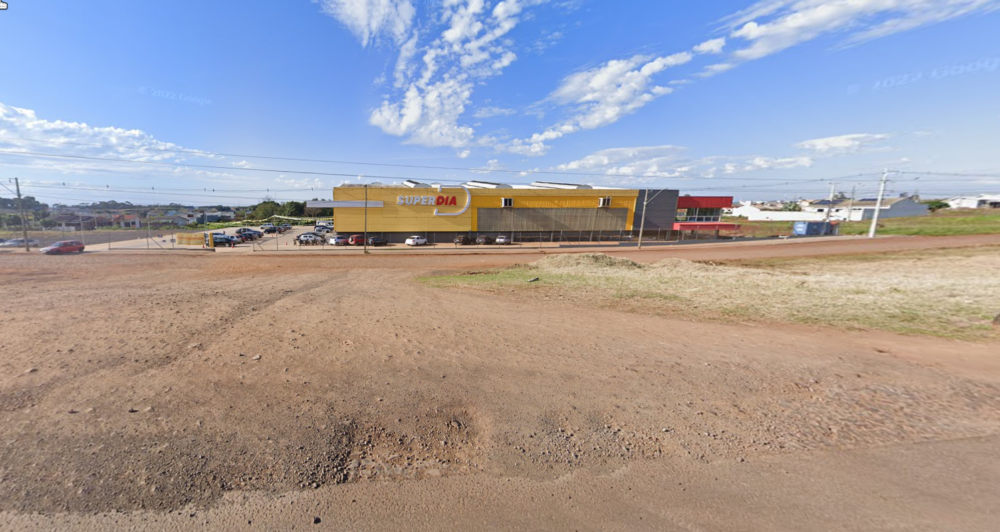

Um bairro acolhedor com o Super Dia como referência principal
O bairro Santa Bárbara é uma região tranquila e residencial de Capanema, Paraná. Conhecido por sua comunidade unida e ruas bem cuidadas, o bairro oferece uma excelente qualidade de vida para suas famílias. Uma das referências principais para quem conhece a área é o supermercado Super Dia, que fica no centro do bairro, facilitando o acesso a compras e serviços.
Veja abaixo a localização do Super Dia no bairro Santa Bárbara:
Esta foto esta mostrando a entrada do Superdia, para facilitar sua chegada.
Para chegar ao bairro Santa Bárbara, você pode usar o Super Dia como ponto de referência. O bairro é acessível por várias vias principais de Capanema, e o supermercado fica na saída, para Planalto perto da entrada da coagro.